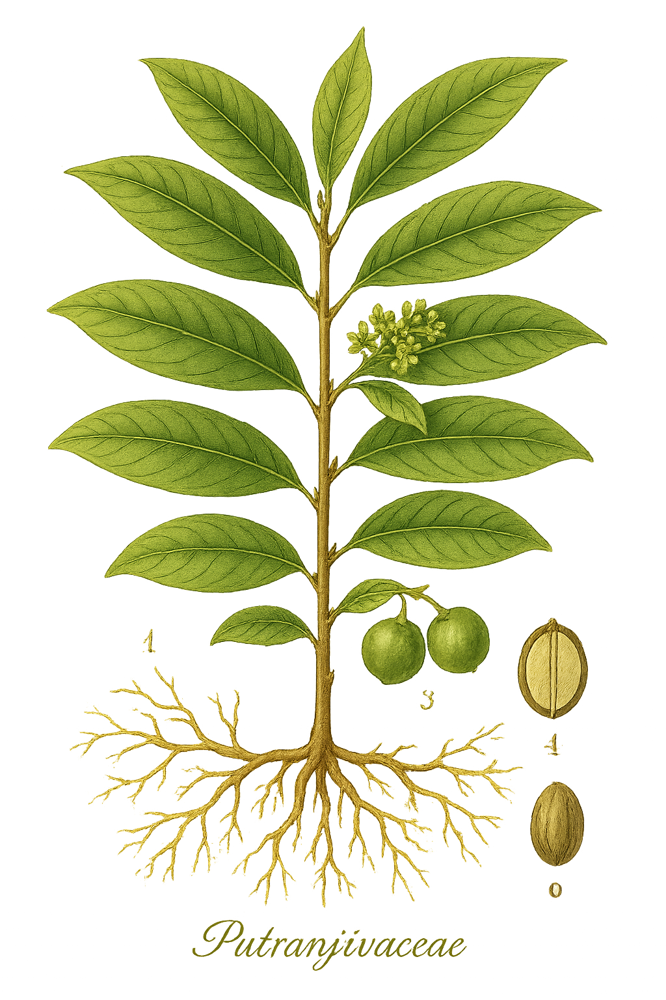

Putranjivaceae
Putranjiva Family
Putranjivaceae is a family of trees and shrubs found throughout the tropics. It includes about 3 genera and over 200 species, characterized by their often dioecious nature (separate male and female plants), simple alternate leaves with stipules, small inconspicuous flowers lacking petals, and fleshy drupaceous fruits. A notable feature is the presence of mustard oil glycosides (glucosinolates), a chemical trait otherwise rare outside the Brassicales order.
Overview
The Putranjivaceae family comprises woody plants distributed across tropical regions of Africa, Asia, and the Americas. Members typically inhabit rainforests, woodlands, and savannas. While not a major family in terms of economic crops, some species are used locally for timber, traditional medicine, or ornamentation (like Putranjiva roxburghii, the Lucky Bean Tree, whose seeds are used in jewelry or as amulets).
The family was previously included within Euphorbiaceae but was segregated based on molecular data and distinct morphological and chemical characteristics. Its most striking biochemical feature is the production of glucosinolates, compounds responsible for the pungent flavor of mustard and horseradish, which is highly unusual within the Malpighiales order where Putranjivaceae resides.
Ecologically, these dioecious trees and shrubs contribute to forest structure, and their fleshy fruits serve as food for various birds and mammals, aiding in seed dispersal.
Quick Facts
- Scientific Name: Putranjivaceae
- Common Name: Putranjiva Family
- Number of Genera: Approximately 3 (Drypetes, Putranjiva, Sibangea)
- Number of Species: Approximately 210
- Distribution: Pantropical
- Evolutionary Group: Eudicots - Malpighiales
Key Characteristics
Growth Form and Habit
Members are typically evergreen or deciduous trees or shrubs. They do not produce latex, distinguishing them from many superficially similar Euphorbiaceae.
Leaves
Leaves are simple, arranged alternately along the stem, and possess stipules (though these may be small and fall off early, leaving a scar). Leaf blades are often leathery (coriaceous), with entire or serrated margins, and frequently have an asymmetrical base. Venation is pinnate.
Sexuality and Inflorescence
Plants are predominantly dioecious, meaning male and female flowers occur on separate individual plants. Flowers are borne in axillary clusters (fascicles), or sometimes solitary.
Flowers
Flowers are generally small, inconspicuous, actinomorphic (radially symmetrical), and unisexual. A key feature is the usual absence of petals (apetalous).
- Sepals: 4-7, small, often overlapping (imbricate).
- Petals: Typically absent.
- Male Flowers: Contain 2 to many stamens; filaments can be free or fused; a rudimentary ovary (pistillode) may be present or absent.
- Female Flowers: Lack stamens (or possess non-functional staminodes); ovary is superior, composed of 1-4 fused carpels, forming 1-4 locules (chambers); styles are often short or absent, with prominent, sometimes lobed or branched stigmas.
Fruits and Seeds
The fruit is characteristically a drupe – a fleshy fruit with a hard inner layer (stone or endocarp) surrounding the seed(s). Drupes are typically one-seeded, sometimes 2-4 seeded depending on the number of locules developing. Seeds often contain oils.
Chemical Characteristics
The most distinctive chemical feature is the presence of glucosinolates (mustard oil glycosides). When tissues are damaged, these compounds break down to produce isothiocyanates, responsible for the pungent smell and taste associated with mustard and related plants. This is a significant chemotaxonomic marker, as glucosinolates are otherwise primarily found in the order Brassicales, far removed from Malpighiales.
Field Identification
Identifying Putranjivaceae involves looking for a combination of woody habit, leaf features, flower structure, fruit type, and potentially chemical cues:
Primary Identification Features
- Habit: Trees or shrubs in tropical regions.
- Leaves: Simple, alternate, with stipules (or stipule scars), often leathery and with an asymmetrical base.
- Dioecious: Check if plants bear only male or only female flowers (requires observing multiple individuals or flowers).
- Flowers: Small, clustered in leaf axils, lacking petals, with 4-7 sepals.
- Fruit: Drupe (fleshy with a hard stone).
Secondary Identification Features
- Lack of Latex: Stems and leaves do not exude milky sap when broken (helps distinguish from many Euphorbiaceae).
- Mustard Oil Scent: Crushed leaves or twigs may release a pungent, mustard-like odor (use caution and verify identity before tasting).
- Stipule Scars: Visible on twigs at the base of the petiole if stipules have fallen.
- Ovary/Fruit Locules: Check the number of chambers in the ovary (female flowers) or sections in the fruit (usually 1-4).
Seasonal Identification Tips
- Flowering Season: Varies by species and location, but look for small axillary flower clusters during warmer/wetter periods. Distinguishing male vs. female plants is key.
- Fruiting Season: Drupes develop after flowering; mature fruit color and size can aid identification.
- Vegetative State: Leaf characteristics (shape, texture, asymmetry, stipule scars) are useful year-round.
Common Confusion Points
Putranjivaceae can be confused with members of related families in Malpighiales:
- Euphorbiaceae (Spurge family): Many Euphorbiaceae have latex, and flower structures (like cyathia in Euphorbia) are often very different. Fruits are frequently capsules (schizocarps) that split open, rather than drupes. Petals may be present or absent.
- Phyllanthaceae: Also lack latex. Flowers are small and often axillary, but details of ovary structure (often 2 ovules per locule vs. 1 in Putranjivaceae) and fruit type (often capsules or berries) differ. Lack glucosinolates.
- Salicaceae (Willow family - broader sense): Includes formerly distinct families like Flacourtiaceae. Some tropical members are trees/shrubs with simple alternate leaves, but flower structures (often with petals, different stamen/ovary details) and fruit types (often capsules or berries) differ. Lack glucosinolates.
Field Guide Quick Reference
Look For:
- Tree/shrub habit (tropical)
- Simple, alternate leaves
- Stipules or stipule scars present
- Leaf base often asymmetrical
- Dioecious (separate M/F plants)
- Small, axillary flowers
- Petals absent
- Fruit is a drupe
- No latex
Key Variations:
- Leaf margin (entire vs. serrated)
- Stamen number (few to many)
- Ovary locule number (1-4)
- Presence of mustard oil scent
Notable Examples
While a relatively small family, Putranjivaceae includes some well-known and widely distributed species:

Putranjiva roxburghii
Lucky Bean Tree, Indian Amulet Plant
Native to tropical Asia, this evergreen tree is known for its drooping branches and dark green, wavy-edged leaves. It's widely cultivated as an ornamental and shade tree. The hard, stony seeds (endocarps) are often polished and used in necklaces or as protective amulets, giving the plant its common names.

Drypetes spp.
Various species
Drypetes is the largest genus in the family, with over 200 species found across the tropics worldwide. They are trees or shrubs, often components of rainforest understory or mid-canopy. Many species have hard, durable wood used locally for construction or tools. Some possess medicinal properties attributed to the presence of glucosinolates or other compounds.
Phylogeny and Classification
Putranjivaceae is placed within the large and diverse order Malpighiales, one of the major lineages of rosid eudicots. This order contains roughly 40 families, including well-known groups like Euphorbiaceae, Salicaceae (willows), Violaceae (violets), and Passifloraceae (passionflowers). Putranjivaceae's exact position within Malpighiales is well-supported by molecular data, often grouping with Lophopyxidaceae.
Historically, the genera now in Putranjivaceae were included in Euphorbiaceae subfamily Phyllanthoideae or Oldfieldioideae. However, the lack of latex, presence of glucosinolates, drupaceous fruits, and specific details of pollen and wood anatomy, combined with DNA evidence, strongly supported its recognition as a distinct family.
Position in Plant Phylogeny
- Kingdom: Plantae
- Clade: Angiosperms (Flowering plants)
- Clade: Eudicots
- Clade: Rosids
- Order: Malpighiales
- Family: Putranjivaceae
Evolutionary Significance
Putranjivaceae is evolutionarily significant primarily due to:
- Chemotaxonomy: The presence of glucosinolates is a major anomaly within Malpighiales, suggesting either an ancient retention of the trait, horizontal gene transfer, or convergent evolution of the biosynthetic pathway. This makes the family crucial for studies on the evolution of plant secondary metabolites.
- Phylogenetic Placement: Its clear separation from Euphorbiaceae highlights the power of molecular data in refining plant classification based on evolutionary relationships rather than solely on morphological similarity.
- Tropical Diversification: Represents a distinct lineage of woody plants that has successfully diversified across pantropical ecosystems.